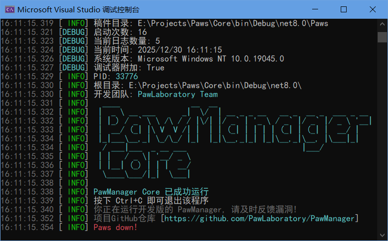

关于PawManager项目（日志系统开发篇）
这是一个我于2025年9月创立的项目，最初的用途是作为我个人的稿件管理工具，但后来我准备逐渐扩展成一个属于自己的生态。
目前我还在孵化项目的第一版，预计不久后就会发布MVP产品了。
我先前开发的项目叫PawManager，但是原始项目使用的技术栈是VB.NET WinForms框架，这是个已经被微软放弃维护的项目，最初我设计的是前后端混合，但为了项目未来考虑，我不得不对前后端进行分离：
原本的后端（包括日志管理器，SQL数据库兼容层，配置文件（如INI，YAML，XAML，JSON）读写组件，插件加载器，网络层管理器，稿件与稿件库实例类等等）使用VB.NET Core开发，这是个比较新的技术栈，有一个最大的优势就是跨平台，并且控制台程序非常适合开发这个项目。这个项目叫做PawLaboratory/Core，实例叫做PawCore。
目前的前端（包括UI，主题等等）使用旧的VB.NET WinForms开发。也就是最初意义的那个PawManager
前后端使用命名管道通信，并且开发一套标准文档，以便于其他开发者使用Node.js，Flask，C#等其他技术栈，框架或编程语言去开发其他版本Windows客户端，Linux客户端，MacOS客户端，以及Web客户端等等，为项目提升了扩展性。
我可能需要规范相关内容，比如第三方前端必须标注项目隶属于PawManager。
今天是2025年12月30日，两天前我开始逐渐重构我的项目，我尝试使用VSCode开发，但我注意到VSCode对VB.NET支持度不够高，甚至没有悬停显示，以及函数跟踪与跳转，调试也非常不方便（甚至.vb文件的图标也没有，和文本文件坐一桌，这我很不舒服），在VSCode折腾了一下午后，我成功地放弃了VSCode并回到Visual Studio进行开发了，看起来只有这里开发是让我感觉足够舒适的。
重构的时候我注意到先前混合端开发的日志处理类是正常使用的（但仅在Windows平台测试过，没有尝试在其他平台如Linux的兼容性），这是个我自己开发的日志类，为了更好看，也更容易记录相关信息。
以下是我的日志记录器的核心代码：
''' <summary>
''' 全局日志记录器实例，此类无法被继承
''' </summary>
Public NotInheritable Class Logger
'...
'记录日志方法
Public Sub Log(message As String, level As LogLevel, Optional ex As Exception = Nothing)
If level < _minLogLevel Then Return '过滤掉低于特定等级的消息
Dim logEntry As New StringBuilder()
logEntry.Append($"§8{DateTime.Now:HH:mm:ss.fff}§r ") '时间戳
Select Case level'使用{level,-5}可以在右侧添加空格
Case LogLevel.DEBUG
logEntry.Append("[§bDEBUG§r] ")
Case LogLevel.INFO
logEntry.Append("[ §aINFO§r] ")
Case LogLevel.WARN
logEntry.Append("[ §eWARN§r] §e")
Case LogLevel.ERROR
logEntry.Append("[§cERROR§r] §c")
Case LogLevel.FATAL
logEntry.Append("[§cFATAL§r] §6")
End Select
logEntry.Append(message) '获得消息正文
If ex IsNot Nothing Then '如果有异常, 添加异常信息
logEntry.AppendLine()
logEntry.AppendLine($"异常类型: {ex.GetType}")
logEntry.AppendLine($"{ex.StackTrace}")
End If
Dim logMessage As String = RemoveColorCodes(logEntry.ToString()) '将颜色字符过滤以便写入文件
ConsoleWriteLineWithColor(logEntry.ToString()) '将日志输出到控制台
Try
Using writer As New StreamWriter(_logFilePath, True, Encoding.UTF8) '将过滤后的字符写入文件
writer.WriteLine(logMessage)
If _autoFlush Then writer.Flush() '刷新缓冲区
End Using
Catch exIO As IOException
'如果文件写入失败, 尝试输出到控制台
Log($"无法写入日志文件: {exIO.Message}", LogLevel.ERROR)
End Try
End Sub
'...
End Class
这个就是我自己设计的日志记录的核心部分了，完整代码你可以在PawLaboratory/Core看到，下图为这个日志库实际显示效果：

我这样设计不仅是为了方便我后续在使用基础设施的时候更方便更容易的输出颜色字符，同时也是考虑到其他插件开发者会尝试在日志输出东西用的，就像Minecraft服务器插件那样，为插件开发者提供更自由的方式。
至于颜色显示部分，我参考了Minecraft服务器插件的实现，使用格式化代码（§）加上字母和数字去实现变色效果，并且设计了一套特有的算法，在记录日志的同时写入文件，并且能够过滤颜色相关字符。这里我注意到：Windows的命令提示符的color命令的数字与颜色竟然刚好与Minecraft对应的上，似乎都是为了兼容16位显示模式的。
在开发日志库的时候，我有考虑到几个问题：
- 时间戳：我为了方便调试，也为了显示信息更具体，使用了千分位的格式（如16:11:15.319），小数点后三位可以让我的项目更专业，也更容易分析问题
- 日志级别：目前的配色是我精心考虑的，但像是INFO这样的日志级别很难直接优化到5个字符的宽度，为了格式上对齐，只能在美观层面进行一些牺牲，我选择了右对齐。
- 关于Minecraft原版的§r功能：它是一个恢复默认颜色的特殊标记，我的实现是在日志类初始化的时候，读取并记录这个值，然后在遇到这个标记的时候，把颜色换成初始化的时候那个值，按理说默认应该是灰色，但我不知道为什么实际是黑色，导致与背景颜色混在一起，当时我在排查这个Bug的时候遇到了很久，所以我后来改成硬编码的灰色了：
#Region "彩色字符方法"
'...
Private ReadOnly colorCodes As New Dictionary(Of Char, ConsoleColor) From {
{"0", ConsoleColor.Black},
{"1", ConsoleColor.DarkBlue},
{"2", ConsoleColor.DarkGreen},
{"3", ConsoleColor.DarkCyan},
{"4", ConsoleColor.DarkRed},
{"5", ConsoleColor.DarkMagenta},
{"6", ConsoleColor.DarkYellow},
{"7", ConsoleColor.Gray},
{"8", ConsoleColor.DarkGray},
{"9", ConsoleColor.Blue},
{"a", ConsoleColor.Green},
{"b", ConsoleColor.Cyan},
{"c", ConsoleColor.Red},
{"d", ConsoleColor.Magenta},
{"e", ConsoleColor.Yellow},
{"f", ConsoleColor.White},
{"r", ConsoleColor.Gray} '重置颜色(默认为灰色)
} '颜色常量表
'...
#End Region
目前只有包含修改文字前景色（文本颜色）的方法，在将来我可能会加上修改控制台背景色的相关方法，可能使用特殊字符，但实际上作用不大，更多的是为了好玩，毕竟功能是最主要的。
未来可能还需要一点，也就是我得考虑有些人可能会使用集中式日志管理等工具，所以还得在日志的实现上进行一些修改，比如输出JSON格式等等，或者是允许插件对日志类进行重写和接管。
以及还有一点，为了让项目被更多人使用，我可能需要重写代码注释为英文版本，以及提供一套配置格式，允许用户自定义日志级别的字符数量，输出信息，时间戳格式等等，这会让这套系统变得更加专业。